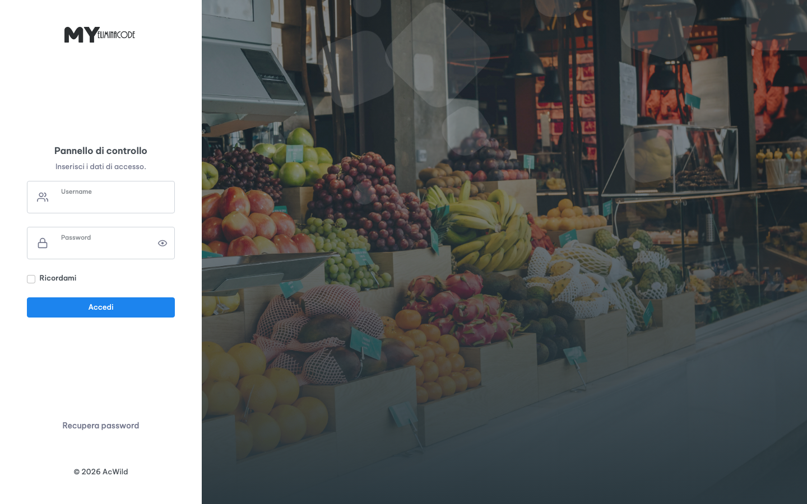

Accesso e ruoli
Chi entra, da dove entra e cosa vede. Il pannello non ha una pagina di login separata: il form viene mostrato dalla pagina richiesta quando la connessione non arriva da localhost.
I quattro ingressi
Ogni postazione apre un indirizzo diverso dello stesso server. Non tutti richiedono un accesso: totem e monitor sono pensati per essere lasciati aperti in modalità kiosk.
| Indirizzo | Cosa apre | Accesso |
|---|---|---|
/dashboard.php | Pannello di amministrazione (prima sezione) | Libero da localhost, login da LAN |
/totem.php | Interfaccia di emissione biglietti | Nessun login: va protetto a livello di rete |
/index2.php | Monitor di sala d'attesa | Nessun login: solo lettura dei turni |
/click.php | Postazione operatore | Nessun login applicativo |
Le pagine del pannello rispondono solo a indirizzi di rete locale (127.0.0.1, ::1, 10.x, 172.16-31.x, 192.168.x, IPv6 fc00::/7). Se apri il pannello da Internet senza proxy o VPN il server restituisce direttamente 403, senza mostrare il login: non è un guasto, è il controllo previsto.
Come funziona il login
- Apri il pannello dalla LAN
Da un PC della stessa rete vai su
http://<ip-server>/dashboard.php. La pagina mostra il riquadro di accesso con utente, password e il pulsante Accedi. - Inserisci le credenziali
Gli account sono in
system_users.json, non nel database. Se il file non esiste, il sistema lo crea al primo avvio con l'utenteadmine passwordadmin. - La sessione viene legata all'indirizzo IP
La sessione usa una chiave derivata dal percorso dell'installazione e resta valida 8 ore. Se l'IP del client cambia, la sessione non viene più riconosciuta e il login ricompare.
- Atterraggio sulla prima sezione consentita
Se l'utente non può vedere la pagina richiesta, il sistema lo reindirizza alla prima sezione abilitata del suo profilo.
- Uscita
Il link Esci in alto a destra chiama la stessa pagina con
?logout=1: la sessione viene cancellata e si torna al form.
Finché l'utente admin conserva la password admin, il form di login mostra un avviso. La password si cambia da Sistema & Sincro oppure da Gestione utenti.
Ruoli e permessi
Non esistono ruoli rigidi: ogni utente ha un elenco di sezioni abilitate. Il flag super-amministratore ignora l'elenco e apre tutto. La Dashboard è visibile a tutti gli utenti attivi, anche se nel profilo non è spuntata.
| Chiave | Sezione | File |
|---|---|---|
dashboard | Dashboard | dashboard.php |
amministrazione | Grafica Totem | amministrazione.php |
config_stampante | Stampante | config_stampante.php |
config_sportelli | Sportelli / Click | config_sportelli.php |
config_monitor2 | Monitor Coda | config_monitor2.php |
config_sincronizzazione | Sistema & Sincro | config_sincronizzazione.php |
gestione_utenti | Gestione utenti | gestione_utenti.php |
stampa_errori | Log Stampa | stampa_errori_view.php |

Accesso da localhost
Sul server stesso non viene chiesto nulla: admin_is_localhost() riconosce 127.0.0.1 e ::1 e la pagina si apre direttamente. È la via più rapida per un intervento di manutenzione, ma va usata con criterio:
- dal server si è sempre super-amministratori, anche se l'utente collegato non esiste;
- le operazioni fatte da localhost restano nei log senza un nome utente associato;
- se il server ha un desktop, chiunque lo usi può modificare la configurazione.
Per verificare se un problema è di permessi o di configurazione, apri la stessa pagina da localhost: se lì funziona, il difetto è nel profilo utente o nella sessione, non nel codice.
Totem e monitor in modalità kiosk
Totem e monitor non hanno login perché devono ripartire da soli dopo un'interruzione di corrente. La protezione è tutta a livello di rete e di browser:
- Browser dedicato
Crea un profilo Chrome o Edge separato per il totem, senza estensioni e senza sincronizzazione.
- Avvio in kiosk
chrome --kiosk --app=http://<ip-server>/totem.phpapre la pagina a tutto schermo, senza barre e senza possibilità di navigare altrove. - Riavvio automatico
Su Linux, un servizio
systemdo una voce in Applicazioni di avvio con lo stesso comando riporta il totem in funzione dopo ogni riavvio. - Blocco della tastiera
Se il totem è un PC accessibile al pubblico, disabilita le scorciatoie del browser e limita l'utente di sistema al solo avvio del kiosk.
Esposizione su Internet
Il pannello è progettato per la rete locale. Se serve l'accesso da fuori sede, non aprire direttamente la porta 80/443 del server: usa una VPN, oppure un reverse proxy con HTTPS e autenticazione aggiuntiva. In quest'ultimo caso ricordati che il controllo degli IP legge l'indirizzo della connessione: dietro un proxy va propagato l'IP reale (X-Real-IP o X-Forwarded-For), altrimenti tutte le richieste sembrano esterne e ricevono 403.
# esempio Nginx — propagazione IP reale
location / {
proxy_pass http://127.0.0.1:8080;
proxy_set_header X-Real-IP $remote_addr;
proxy_set_header X-Forwarded-For $proxy_add_x_forwarded_for;
proxy_set_header Host $host;
}curl -I http://<ip-server>/dashboard.php da un PC della LAN deve rispondere 200. Se risponde 403, il problema è l'indirizzo sorgente; se risponde 500, manca connect.php o il database non è raggiungibile.
linux
Documento statico, consultabile senza connessione